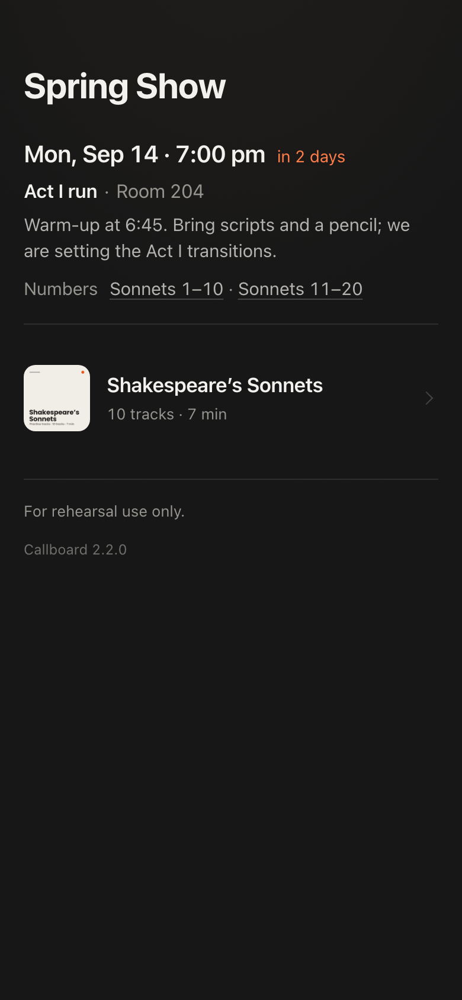
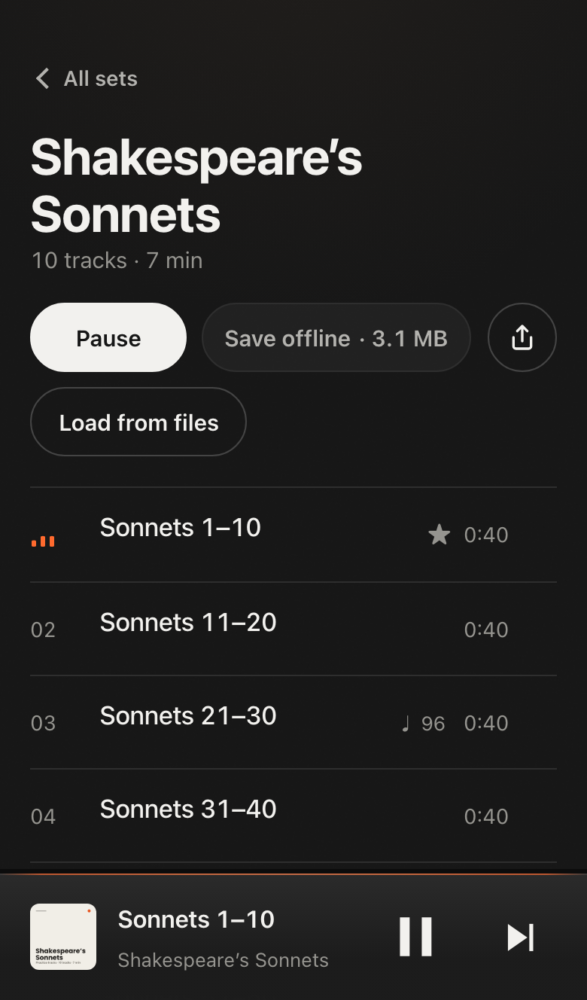
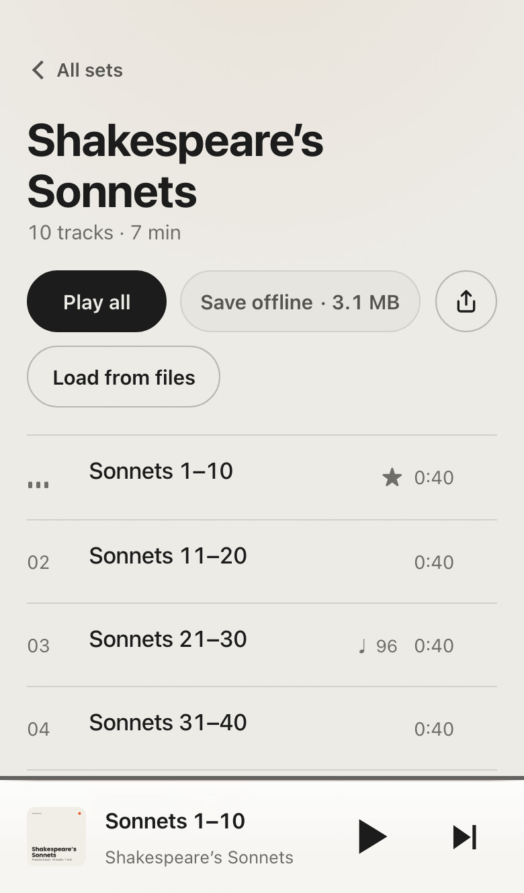

Make it yours.
Your name on the door. Your colour on the wave. Your badge on the track that is playing. Your lucky number in the confetti. Every one is a setting, not code, and so is the lock: leave the address open, which is what a cast usually wants, or ask for a sign-in and whatever the site already uses guards the app too. Try three of them on a real copy, running in your browser.
Example settings
Each example changes the site name and accent colour. The preview shows the result.
Live demo
Starts a temporary WordPress site with Callboard and a sample playlist, using WordPress Playground. It runs in your browser, nothing is installed, and the site is deleted when you leave the page. It takes about 10 to 30 seconds to start.
Start the live demo
Posted once, in WordPress.
The stage manager writes the call the way any post is written: a title, a note, when, where, the numbers being worked. Schedule it for the night before. It lands at the top of every phone, and every number is a tap that starts the track.


The player.
Previous, play, next. A waveform to scrub. A loop for the hard eight bars. Lyrics and the director's notes in time with the track. Save a set once and it plays with no signal in the building.
Hand it to someone.
A set is a file. It carries the audio, the order, the levels, and everything anybody wrote about it. Send one track to the phone beside you and the share sheet has AirDrop in it, so no account and no signal. Load a set from a file when there is no bandwidth to download it. Or write it to a stick, and the show plays in the car on the drive in.

Under the hood.
A WordPress plugin, one script and one stylesheet, and as much of the web platform as the phones in a rehearsal room can run.
HTML media element, Media Session, Web Audio, Audio Session, Remote Playback, Web Locks, TextTrack, Service Worker, Cache API, Range requests, Streams, Storage, Web App Manifest, View Transitions, Push API, Notifications, Badging, Web Share, VAPID, WebKit switch haptics, Canvas 2D, anchor positioning, container queries, text-box-trim, text-wrap: pretty.